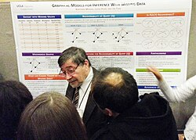

Judea Pearl | |
|---|---|
יהודה פרל | |
 Pearl at NIPS 2013 | |
| Born | September 4, 1936 |
| Education | Israel Institute of Technology (BS) New Jersey Institute of Technology (MS) Rutgers University, New Brunswick (MS) New York University (PhD) |
| Known for | Artificial Intelligence Causality Bayesian Networks Structural Equation Modeling Pearl vortex |
| Spouse | |
| Children | 3, including Daniel |
| Awards | IJCAI Award for Research Excellence (1999) Turing Award (2011)[1] Rumelhart Prize (2011) Harvey Prize (2011) BBVA Foundation Frontiers of Knowledge Award (2021)[2] |
| Scientific career | |
| Fields | Computer science, statistics |
| Thesis | Vortex Theory of Superconductive Memories (1965) |
| Leonard Strauss Leonard Bergstein | |
Doctoral students | Rina Dechter, Hector Geffner, Elias Bareinboim, Karthika Mohan |
| Website | bayes |
.jpg){kind=link}
Judea Pearl (Hebrew: יהודה פרל; born September 4, 1936) is an Israeli-American electrical engineer, computer scientist and philosopher, best known for championing the probabilistic approach to artificial intelligence and the development of Bayesian networks (see the article on belief propagation). He is also credited for developing a theory of causal and counterfactual inference based on structural models (see article on causality). In 2011, the Association for Computing Machinery (ACM) awarded Pearl with the Turing Award, the highest distinction in computer science, "for fundamental contributions to artificial intelligence through the development of a calculus for probabilistic and causal reasoning".[1][3][4][5] He is the author of several books, including the technical Causality: Models, Reasoning and Inference, and The Book of Why, a book on causality aimed at the general public.
Judea Pearl is the father of journalist Daniel Pearl, who was kidnapped and murdered by terrorists in Pakistan connected with Al-Qaeda and the International Islamic Front in 2002.[6][7]
Biography
Judea Pearl was born in Tel Aviv, British Mandate for Palestine, in 1936 to Eliezer and Tova Pearl, who were Polish Jewish immigrants, grew up in Bnei Brak. His grandfather Chaim Pearl was one of Bnei Brak's founders.[8][9][10] He is a descendant of Menachem Mendel of Kotzk on his mother's side. After serving in the Israel Defense Forces and joining a kibbutz, Pearl decided to study engineering in 1956. He received a B.S. in electrical engineering from the Technion 1960. That same year, he emigrated to the United States and pursued graduate studies. He received an M.S. in electrical engineering from the Newark College of Engineering (now New Jersey Institute of Technology) in 1961, and went on to receive an M.S. in physics from Rutgers University and a PhD in electrical engineering from the Polytechnic Institute of Brooklyn (now the New York University Tandon School of Engineering) in 1965.[11] He worked at RCA Research Laboratories (now SRI International) in Princeton, New Jersey on superconductive parametric amplifiers and storage devices and at Electronic Memories, Inc., on advanced memory systems.[11] When semiconductors "wiped out" Pearl's work, as he later expressed it,[12] he joined UCLA's School of Engineering in 1970 and started work on probabilistic artificial intelligence. He is one of the founding editors of the Journal of Causal Inference.
Pearl is currently a professor of computer science and statistics and director of the Cognitive Systems Laboratory at UCLA. He and his wife, Ruth, had three children. In addition, as of 2011, he is a member of the International Advisory Board of NGO Monitor.[13]
Former Israeli Chief Rabbi, Rabbi Yisrael Meir Lau, partnered with Judea Pearl in the documentary With My Whole Broken Heart.[14][15]
Murder of Daniel Pearl
In 2002, his son, Daniel Pearl, a journalist working for the Wall Street Journal was kidnapped and murdered in Pakistan, leading Judea and the other members of the family and friends to create the Daniel Pearl Foundation.[16] On the seventh anniversary of Daniel's death, Judea wrote an article in the Wall Street Journal titled Daniel Pearl and the Normalization of Evil: When will our luminaries stop making excuses for terror?.[17]
Emeritus Chief Rabbi Jonathan Sacks quoted Judea Pearl's beliefs in a lesson on Judaism: "I asked Judea Pearl, father of the murdered journalist Daniel Pearl, why he was working for reconciliation between Jews and Muslims...he replied with heartbreaking lucidity, 'Hate killed my son. Therefore I am determined to fight hate.'"[18]
Views
On his religious views, Pearl states that he is a "practicing disbeliever."[19][20] He is very connected to Jewish traditions such as holidays and kiddush on Friday night.[21]
Pearl sits on the NGO Monitor international advisory board[22], a right-wing organization based in Jerusalem that reports on non-governmental organization activity from a pro-Israel perspective.
Research
Pearl is credited for "laying the foundations of modern artificial intelligence, so computer systems can process uncertainty and relate causes to effects." [2] He is one of the pioneers of Bayesian networks and the probabilistic approach to artificial intelligence, and one of the first to mathematize causal modeling in the empirical sciences. His work is also intended as a high-level cognitive model. He is interested in the philosophy of science, knowledge representation, nonstandard logics, and learning. Pearl is described as "one of the giants in the field of artificial intelligence" by UCLA computer science professor Richard E. Korf.[23] His work on causality has "revolutionized the understanding of causality in statistics, psychology, medicine and the social sciences" according to the Association for Computing Machinery.[24]
Notable contributions
- A summary of Pearl's scientific contributions is available in a chronological account authored by Stuart J. Russell (2012).
- An annotated bibliography of Pearl's contributions was compiled by the ACM in 2012.
- A video describing Pearl's major contributions to AI is available here.
- Pearl's opinion pieces, touching on Jewish identity, the war on terrorism, and the Middle East conflict can be accessed here.
Books
- Heuristics, Addison-Wesley, 1984
- Probabilistic Reasoning in Intelligent Systems, Morgan-Kaufmann, 1988
- Pearl, Judea (2000). Causality: Models, Reasoning, and Inference. Cambridge University Press.
- I Am Jewish: Personal Reflections Inspired by the Last Words of Daniel Pearl, Jewish Lights, 2004. (Winner of a 2004 National Jewish Book Award)
- Causal Inference in Statistics: A Primer, (with Madelyn Glymour and Nicholas Jewell), Wiley, 2016. ISBN 978-1-119-18684-7
- A previous survey: Causal inference in statistics: An overview, Statistics Surveys, 3:96–146, 2009.
- Pearl, Judea; Dana Mackenzie (2018). "The Book of Why: The New Science of Cause and Effect". Science. 361 (6405): 855. Bibcode:2018Sci...361..855.. doi:10.1126/science.aau9731.
Awards
- Foreign Member of the Royal Society (2025)[25]
- Kampe De Feriet Award from the Conference on Information Processing and Management of Uncertainty (IPMU) (2024)
- Test of Time Award from International Conference on Principles of Knowledge Representation and Reasoning (2023)
- BBVA Foundation Frontiers of Knowledge Award[2] (2021)
- Carnegie Corporation of New York as an honoree of the Great Immigrants Awards[26]
- Classic Paper Award, Artificial Intelligence Journal AIJ Awards (2020)
- Honorary Fellow, Royal Statistical Society AI pioneer named Royal Statistical Society Honorary Fellow (2020)
- Fellow of the American Statistical Association.[27] (2019)
- Honorary Doctorate, Hebrew University of Jerusalem [1] (2018)
- Honorary Doctorate, Yale University Judea Pearl receives honorary doctorate from Yale, (2018)
- Edward A. Dickson Award, UCLA Judea Pearl Wins UCLA Edward A. Dickson Emeritus Professorship Award | CS(2018)
- Ulf Grenander Prize, American Mathematical Society News from the AMS (2018)
- Sells Award for Distinguished Lifetime Achievement, Society for Multivariate Experimental Psychology Sells Award for Distinguished Multivariate Research | SMEP (2016)
- Fellow, ACM Judea Pearl named Association for Computing Machinery Fellow (2015)
- Dickson Prize, Carnegie Mellon University Pearl wins Dickson Prize from Carnegie Mellon (2015)
- Classic Paper Award, Artificial Intelligence Journal 2015 AIJ CLASSIC PAPER AWARD (2015)
- Honorary Doctorate, Carnegie Mellon University Judea Pearl to receive honorary doctorate from Carnegie Mellon University (2015)
- Member, National Academy of Sciences.[28] UCLA artificial intelligence pioneer elected to the National Academy of Sciences(2014)
- Honorary Doctorate, Texas A&M Graduation – Honorary Degrees (2014)
- Lynford Lecture and Distinguished Alumni Award, NYU-Polytechnic Computer Scientist and Philosopher Judea Pearl Delivers 15th Annual Lynford Lecture on Science of Cause and Effect | NYU Tandon School of Engineering (2013)
- Medallion Lecture, Institute of Mathematical Statistics, JSM-2013 Institute of Mathematical Statistics | Medallion Lecture: Judea Pearl(2013)
- Special Issue honoring Judea Pearl, Cognitive Science Journal [2] (2013)
- ACM Turing Award,[1][3] Association for Computing Machinery Judea Pearl Wins 2011 ACM Turing Award (2012)
- Fellow, American Academy of Arts and Sciences Judea Pearl (2012)
- Harvey Prize, Technion, Israel Institute of Technology [3] (2012)
- Fellow, Cognitive Science Society Fellows of the Society Archived April 4, 2022, at the Wayback Machine (2011)
- David E. Rumelhart Prize, Cognitive Science Society Rumelhart Prize (2011)
- IEEE Intelligent Systems' AI's Hall of Fame[29] (2011)
- Otis Dudley Duncan Memorial Lecture, American Sociological Society (2010)
- Festschrift and symposium in honor of Judea Pearl TRIBUTE TO JUDEA PEARL (2010)
- Heuristics, Probability and Causality: A Tribute to Judea Pearl, R. Dechter, H. Geffner, and J.Y. Halpern (Eds.), College Publication [4] (2010)
- Honorary Doctorate, Chapman University [5] (2008)
- Benjamin Franklin Medal in Computers and Cognitive Science, The Franklin Institute [6] (2008)
- Honorary Doctorate of Science, University of Toronto [7] (2007)
- Purpose Prize Judea Pearl and Akbar Ahmed (2006)
- Classic Paper Award, AAAI 2006 AAAI CLASSIC PAPER AWARD (2006)
- Allen Newell Award, Association for Computing Machinery Judea Pearl(2004)
- Pekeris Memorial Lecture, The Weizmann Institute of Science lect82-net (2003)
- Corresponding Member, Royal Academy of Engineering of Spain (2002)
- Lakatos Award, The London School of Economics and Political Science [8] (2001)
- Classic Paper Award, AAAI 2000 AAAI CLASSIC PAPER AWARD (2000)
- IJCAI Research Excellence Award in Artificial Intelligence, International Joint Conference in Artificial Intelligence IJCAI-99 (1999)
- UCLA 81st Faculty Research Lecturer NOTES – UCLA 81st FACULTY RESEARCH LECTURE SERIES (1996)
- Member, National Academy of Engineering (NAE) (1995)
- Fellow, American Association of Artificial Intelligence (AAAI) (1990),
- Fellow, Institute of Electrical and Electronics Engineers (IEEE) (1988),
- RCA Laboratories Achievement Award (1965)
See also
References
- ^ a b c Judea Pearl – A. M. Turing Award winner, ACM, retrieved March 14, 2012.
- ^ a b c BBVA Foundation Frontiers of Knowledge Award (2021). Judea Pearl – Announcement Speech, June 2022.
- ^ a b Gold, Virginia (March 15, 2012). "Judea Pearl Wins ACM A.M. Turing Award for Contributions that Transformed Artificial Intelligence". The Association for Computing Machinery. Archived from the original on March 17, 2012. Retrieved March 15, 2012.
ACM, the Association for Computing Machinery today named Judea Pearl of the University of California, Los Angeles the winner of the 2011 ACM A.M. Turing Award for innovations that enabled remarkable advances in the partnership between humans and machines that is the foundation of Artificial Intelligence (AI).
- ^ Judea Pearl author profile page at the ACM Digital Library
- ^ Goth, G. (2006). "Judea Pearl Interview: A Giant of Artificial Intelligence Takes on All-Too-Real Hatred". IEEE Internet Computing. 10 (5): 6–8. Bibcode:2006IIC....10e...6G. doi:10.1109/MIC.2006.107. S2CID 9932352.
- ^ Fonda, Daren (September 27, 2003). "On the Trail of Daniel Pearl". TIME. Archived from the original on October 1, 2003. Retrieved July 20, 2011.
- ^ Escobar, Pepe (June 28, 2003). "Who killed Daniel Pearl?". Book Review. Asia Times Online. Archived from the original on June 29, 2003. Retrieved July 20, 2011.
- ^ Judea Pearl: Reflections on Loss, Artificial Intelligence, and “Zionophobia”
- ^ "This Day in Jewish History / Journalist Daniel Pearl murdered in Pakistan by Islamic terrorists". Haaretz.
- ^ The Audacious Joy of Judea Pearl
- ^ a b "Judea Pearl – A.M. Turing Award Laureate". amturing.acm.org.
- ^ Leah Hoffmann (2012). "Q&A: A Sure Thing". Communications of the ACM. 55 (6): 135–136. doi:10.1145/2184319.2184347.
- ^ "International Advisory Board Profiles". NGO Monitor. 2011. Retrieved July 20, 2011.
- ^ Wilkinson, Phaedra (July 10, 2015). "From the community: With My Whole Broken Heart". Chicago Tribune.
- ^ With My Whole Broken Heart trailer on YouTube
- ^ "Biography of Dr. Judea Pearl". Daniel Pearl Foundation. 2011. Archived from the original on June 30, 2011. Retrieved July 20, 2011.
- ^ Pearl, Judea (February 3, 2009). "Daniel Pearl and the Normalization of Evil". The Wall Street Journal. p. A15. Retrieved July 20, 2011.
- ^ Jonathan Sacks (September 5, 2014). "Judaism: Covenant & Conversation: Against Hate". Israel National News.
- ^ Mathew Philips. "Tragedy and Opportunity: The parents of slain journalist Danny Pearl have devoted their lives to improving Muslim-Jewish relations". Retrieved July 12, 2013.
I turned secular at the age of 11, by divine revelation. [Laughs.] I was standing on the roof of the house my father built, looking down on the street and suddenly it became very clear to me that there is no God.
- ^ "Robots and the Illusion of Free Will – Conversation with Judea Pearl, Rumelhart Prize Winner". The Science Network. July 22, 2011.
I'm, of course, prisoner of my upbringing, which means my store of metaphors comes from the Bible and comes from history of the Jewish people. But I don't believe in God. Actually, I know there isn't [a] God.
- ^ Fishman Orlins, Susan (November 2006). "The Price of Being Jewish: An Interview with Judea Pearl". Moment.
Did you pray for Danny's safe return? No, I don't believe in a God [that] would listen to me. But I do pray every morning. I lay tefillin. I started a year ago. But aren't you a secular Jew? I'll give you the same answer I gave 10 Muslims who joined me for dinner one Friday night. I said, 'Oh, it's Friday night. I have to do Kiddush.'
- ^ "International Advisory Board". NGO Monitor. Retrieved June 27, 2025.
- ^ Amundson, Marlys (Fall 2004). "A Profile of Judea Pearl – Computer Science Pioneer, Visionary" (PDF). UCLA Engineer (12): 16–17. Retrieved July 20, 2011.
- ^ "ACM HONORS INNOVATORS WHO CHANGED THE SCIENTIFIC WORLD". New York: Association for Computing Machinery. April 27, 2004. Retrieved July 20, 2011.
- ^ "Exceptional scientists elected as Fellows of the Royal Society". Royal Society. May 20, 2025. Retrieved May 22, 2025.
- ^ "AI pioneer named to Carnegie Corporation's annual great immigrants list | UCLA". UCLA. Retrieved June 25, 2024.
- ^ "ASA Fellow Announcement" (PDF). American Statistical Association. Retrieved May 12, 2019.
- ^ National Academy of Sciences Members and Foreign Associates Elected Archived August 18, 2015, at the Wayback Machine, National Academy of Sciences, April 29, 2014.
- ^ Zeng, Daniel (2011). "AI's Hall of Fame" (PDF). IEEE Intelligent Systems. 26 (4): 5–15. Bibcode:2011IISys..26d...5Z. doi:10.1109/MIS.2011.64. Archived from the original (PDF) on December 16, 2011. Retrieved September 4, 2015.
Further reading
- Geffner, Hector; Dechter, Rita; Halpern, Joseph, eds. (2022). Probabilistic and Causal Inference : The Works of Judea Pearl. Association for Computing Machinery. ISBN 978-1-4503-9589-2.
External links
- Official website

- Daniel Pearl Foundation
- Judea Pearl at the Mathematics Genealogy Project
- Judea Pearl at the AI Genealogy Project.
- Greene, Daniel (September 27, 2007), "Interview with Judea Pearl", U.S. Holocaust Memorial Museum, Voices on antisemitism
- "Robots and the Illusion of Free Will". The Science Network. The Science Network. July 22, 2011.
- Fridman, Lex (December 2019). "Interview with Judea Pearl". YouTube. Podcast #56.